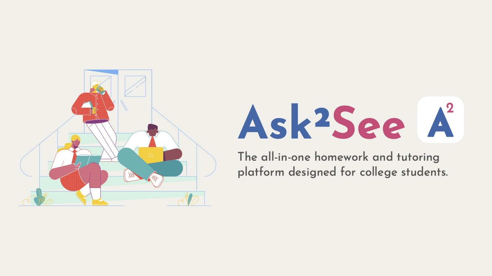
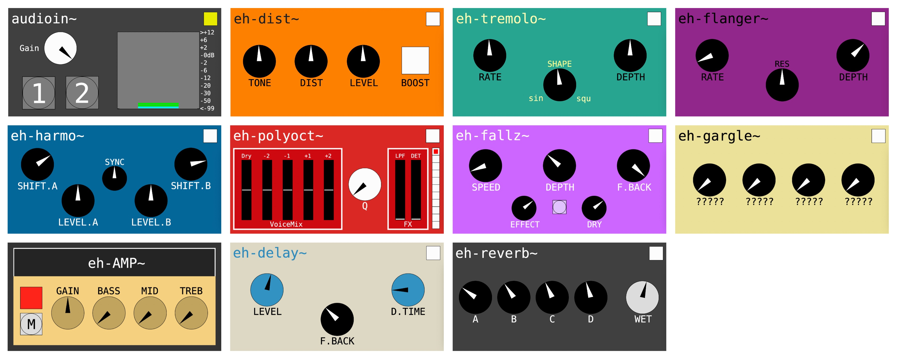
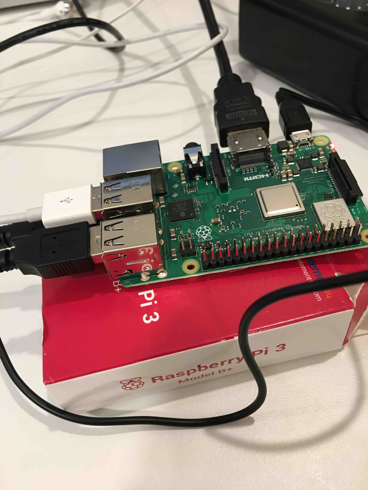
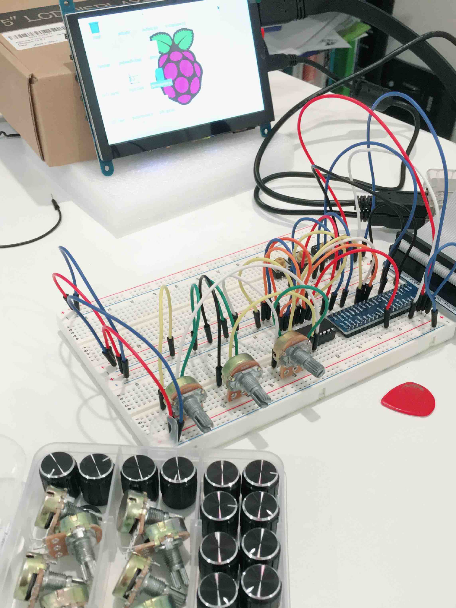
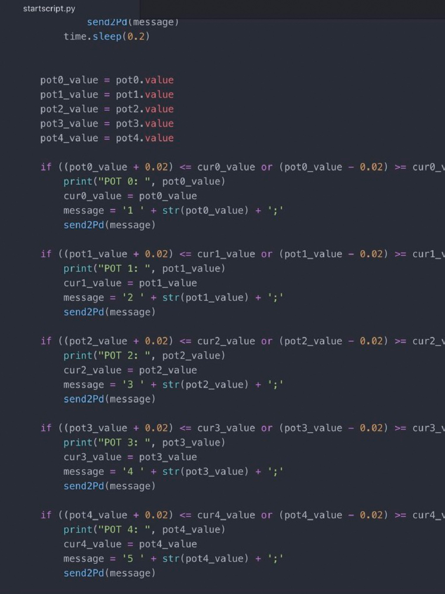
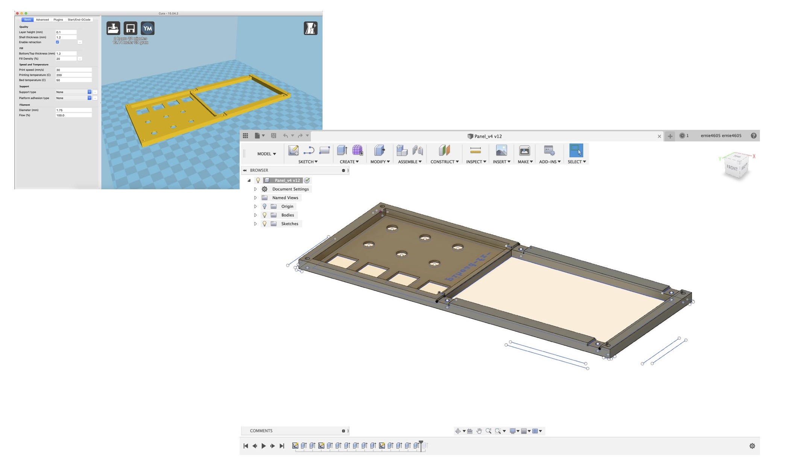
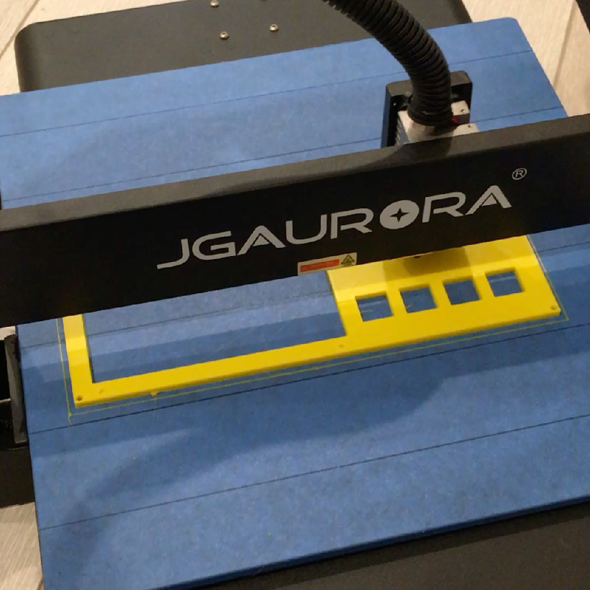
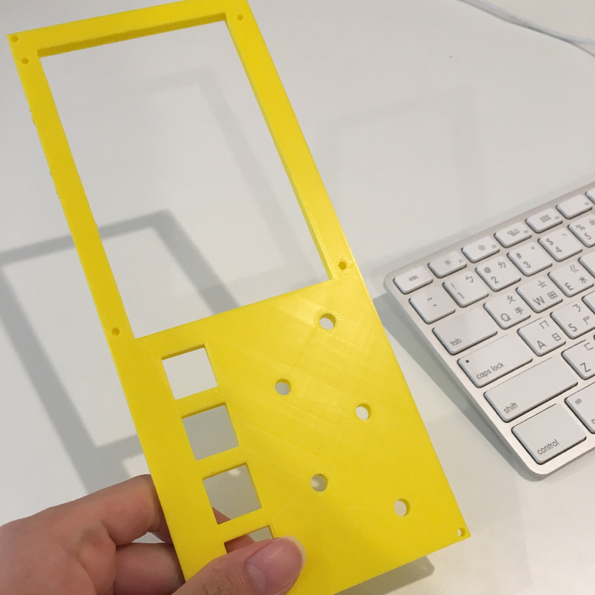
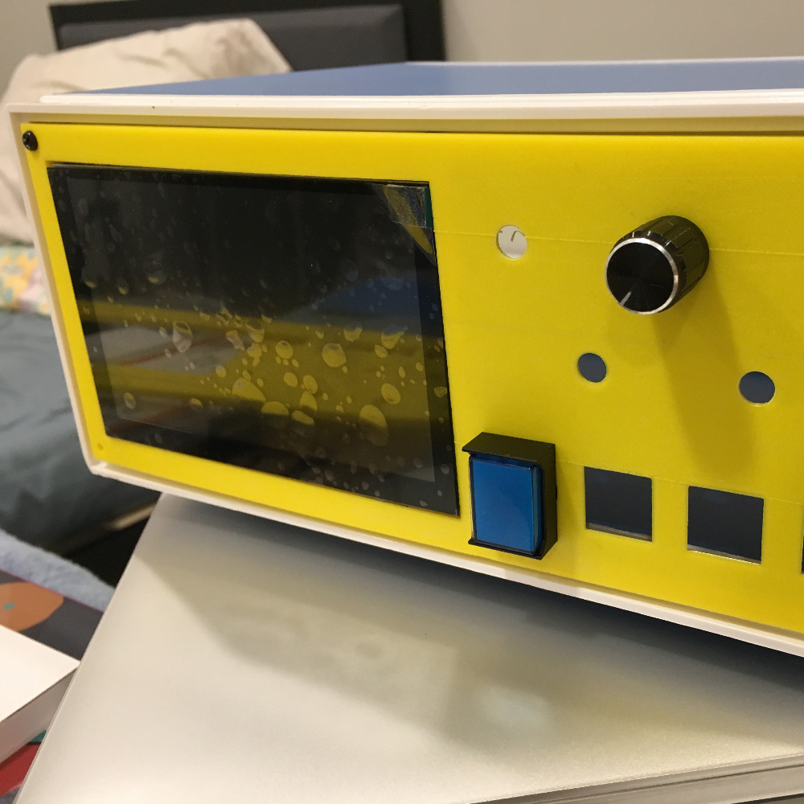

Ask2See

MusiCol is a startup project for a mobile app dedicated to connecting musicians and enhancing their experience in collaborating online. I served as lead designer for the UI/UX of the app. This project was pitched at UCSD's "Successful Entrepreneurship" course.
STOMPBOX UI & interaction

"Face" designs of effect pedals on display are inspired by various notable pedals and amps, such as BOSS DS-1, DD-3, TR-2, BF-2, PS-6, Electro-Harmonix POG2, and Marshall JCM800. Physical knobs and buttons are mapped to the faces, allowing user to navigate between faces as well as turn them on/off. Users also have the option to control from the touch screen.
Here is a demo of guitar signal processed by pihead-fx~'s various effects:
HARDWARE & SOFTWARE Design
pihead-fx~'s DSP is powered by Pure Data (Pd), which runs on a Raspberry Pi 3 Model B+ with GPIO control hardware mapped to Pd patches' internal parameters using a Python script.



Prototyping & 3D Modeling/Printing
The front panel of pihead-fx~ is designed in Autodesk Fusion and sliced for 3D printing using Cura.



